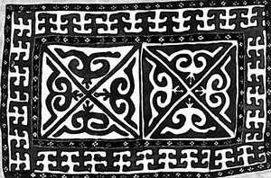
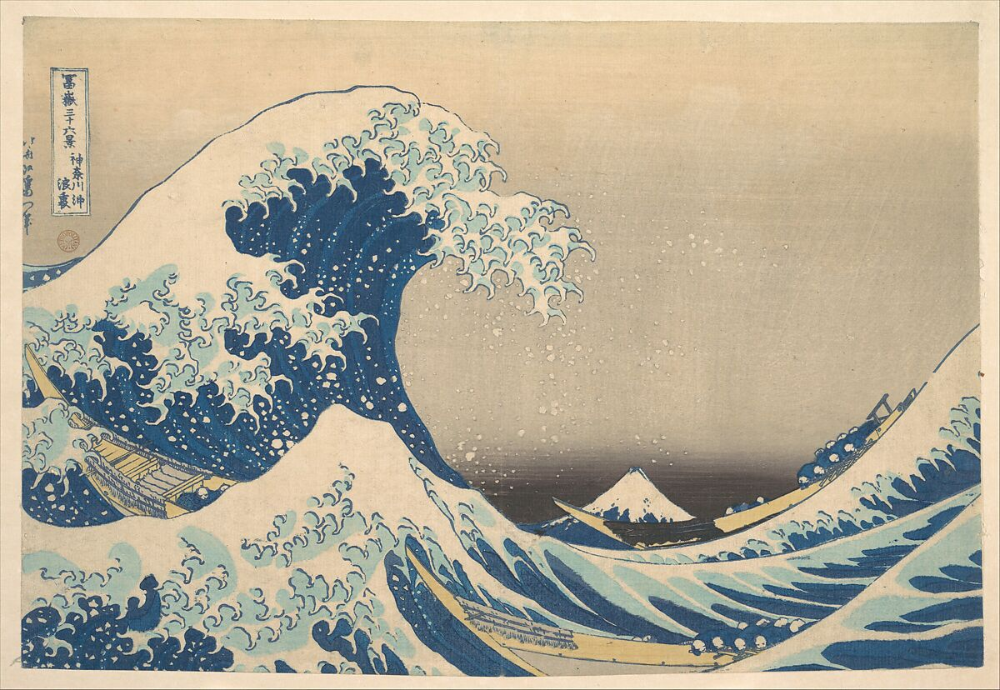

Узорчатый войлочный ковёр. Источник изображения

Японская гравюра. Источник изображения
1. Рассмотри и объясни
2. Твой маршрут
3. Создай композицию
Представь, что оформляешь панно «Ветер над степью». Создай ритм с помощью повторяющихся знаков. Попробуй два варианта и оставь тот, который лучше передаёт твой замысел.
4. Восстанови порядок
Нажми на карточки в порядке работы над композицией.